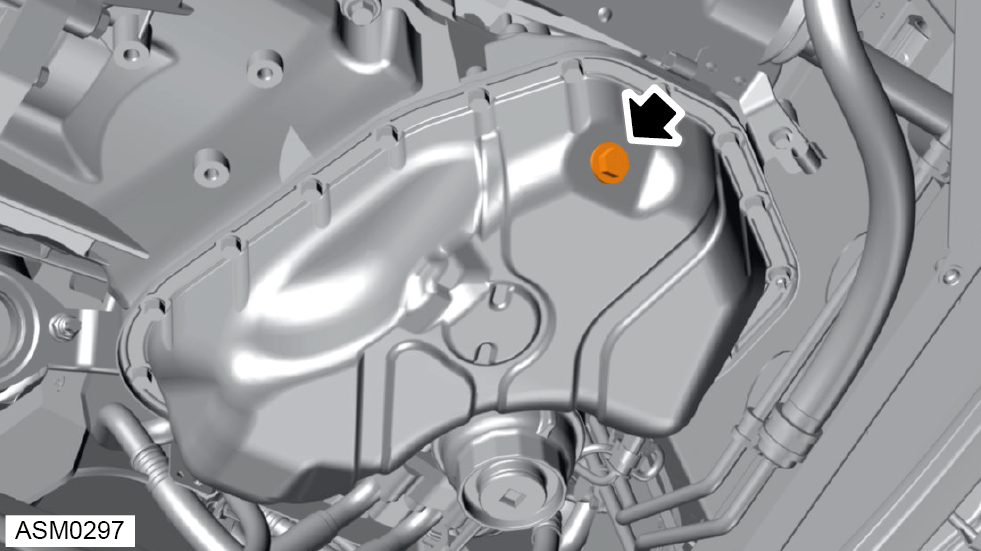

Oil Sump - Lower - V6
Print
Operation Code: 40.03.01-02
Removal
- Remove downpipe. Refer to procedure.
 WARNING: Allow the exhaust to cool down before proceeding to prevent injury.
WARNING: Allow the exhaust to cool down before proceeding to prevent injury.

- Remove sump plug and drain engine oil.
NOTE: Discard sump washer.
- Remove nuts (x2) securing sump to engine. Torque 10 Nm.
- Remove bolts (x16) securing sump to engine. Torque 10 Nm.
NOTE: Torque sump fasteners evenly to prevent warping of the sump during installation.
- Use sump removal tool to release sealant.
- Remove sump.
- Apply silicon remover to sump flange and let sit for 10 minutes.
- Apply silicon remover to engine mating surface and let sit for 10 minutes.
- Remove silicon from sump flange and engine mating surface.
- Clean sump flange.
NOTE: Use Betaclean 3900 to clean sump flange.
Installation
- Installation is the reverse of removal procedure except for the following:
- Apply 5910 sealant around sump flange.
NOTE: Apply 3-4 mm wide bead of sealant to sump flange.
- Replace sump plug washer.